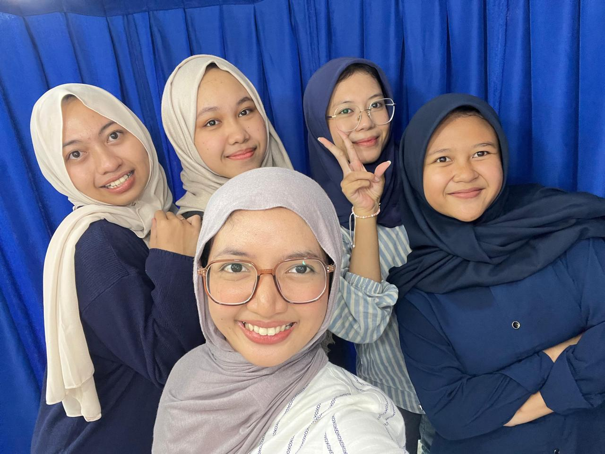
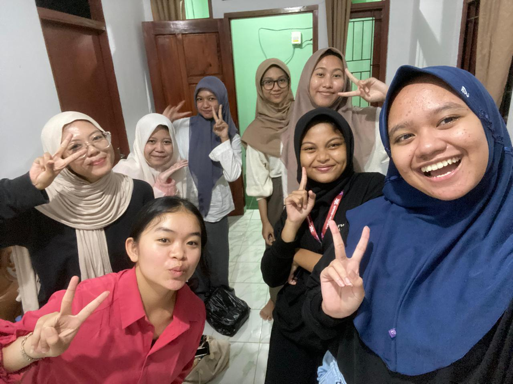
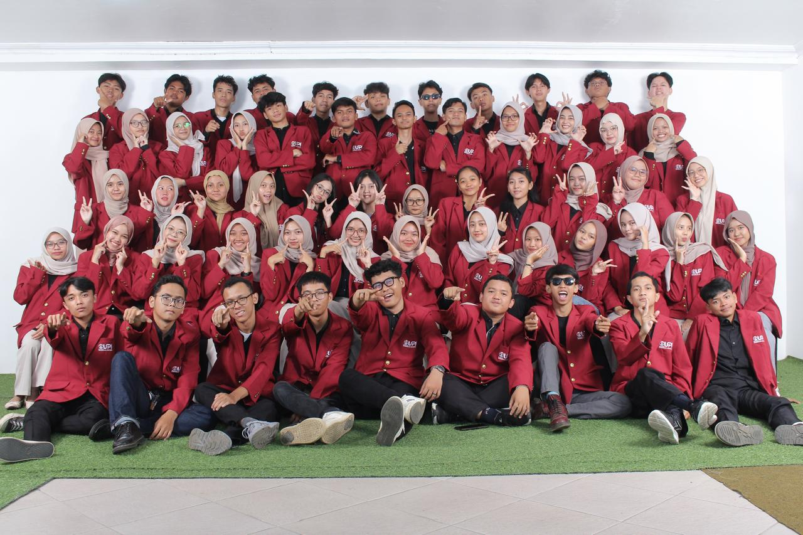
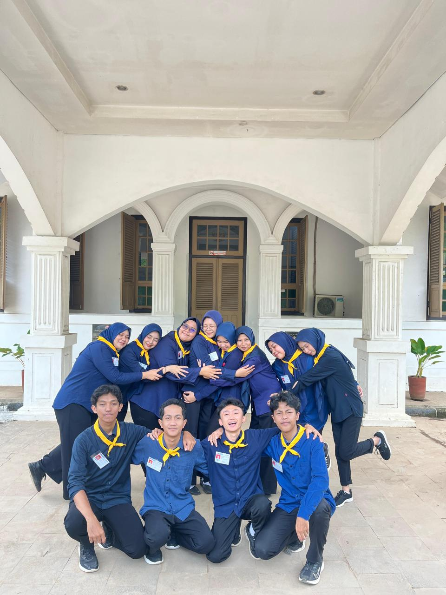
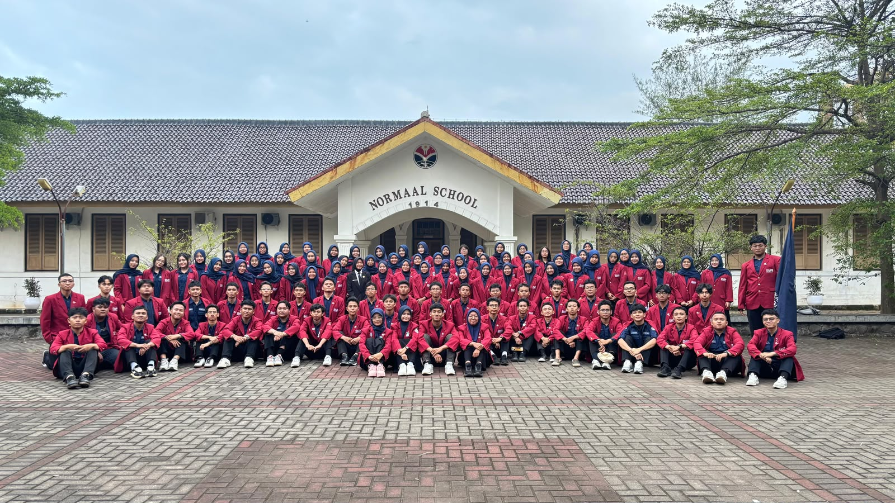

Cerita awal dimana aku mendapatkan banyak pengalaman dan teman.
Di mulai dari aku mengikuti kegiatan disnatalis PSTI pada tanggal 2 Agustus 2025, Melalui kemeriahan acara, terciptalah sebuah komunikasi dan chemistry yang kuat. Dari momen itulah pertemanan awal menjadi sahabat dan teman dekat yang saling mendukung sampai sekarang. (di foto kurang sabrina)

Hari-hari pertama MOKAKU diisi dengan rasa canggung khas mahasiswa baru. Namun, di tengah padatnya rangkaian acara, tegur sapa sederhana dengan orang-orang di sekitar menjadi awal mula perkenalan yang membuka lingkaran pertemanan baru.

Masuk ke awal pembelajaran semester 1, kebersamaan makin terasa utuh saat pembagian kelas resmi ditentukan. Dinamika belajar, tugas kelompok yang menumpuk, hingga candaan spontan di sela-sela jam kuliah membentuk suasana kelas yang sangat solid dan menyenangkan. Setiap harinya selalu ada momen yang bikin betah, membuat kelas merasa seperti rumah kedua di kampus

Masa ROTASI membawa banyak pengalaman baru yang melatih mental dan kedisiplinan. Di tengah padatnya tekanan tugas dan rasa lelah, kesolidan justru makin terpupuk. Rasa saling merangkul dan saling menguatkan membuat perjuangan berat itu terasa jauh lebih ringan dan berkesan.

Bergabung dalam HIMA PSTI Kabinet Mandalaras menjadi ruang baru untuk melangkah lebih jauh di organisasi. Proses dinamika di dalamnya memberikan banyak pelajaran tentang tanggung jawab, kerja tim, dan profesionalisme dalam mengelola berbagai kegiatan.

© 2026 Naysilla Putri Aisa